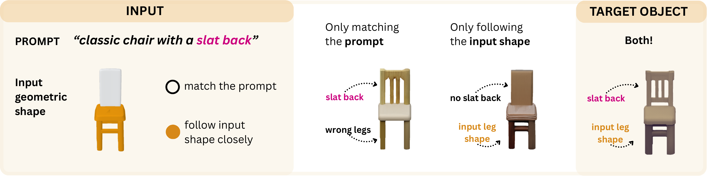
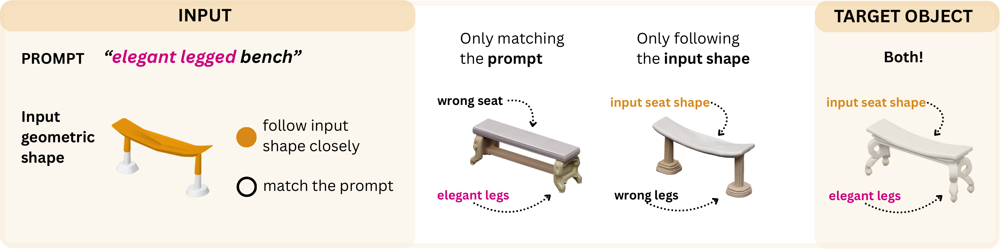

You will compare pairs of 3D objects generated from the same geometric
input, using different levels of shape control.
Before you begin
How this study works
In each trial, a model generates a 3D asset from a text prompt
and an input geometric shape. The input shape is divided
into two control regions that govern how much the output must follow the geometry:
● Orange regions — strongly controlled.
The generated object must stay close to the shape and placement of these parts.
○ Grey/white regions — weakly controlled.
The model generates freely here; the result should match the text prompt.
Example 1 — chair with a slat back

Example 2 — elegant legged bench

In each trial, you will see the input geometric shape alongside
two generated 3D objects (Sample A and Sample B). Answer three questions:
Q1 — Control: Which object better matches the prompt in grey regions and the input shape in orange regions?
Q2 — Realism: Which looks more realistic?
Q3 — Overall: Which looks better overall?
Judge each question independently. A good result should both match
the text prompt and preserve the intended structure in the orange regions —
just getting one right is not enough.